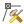
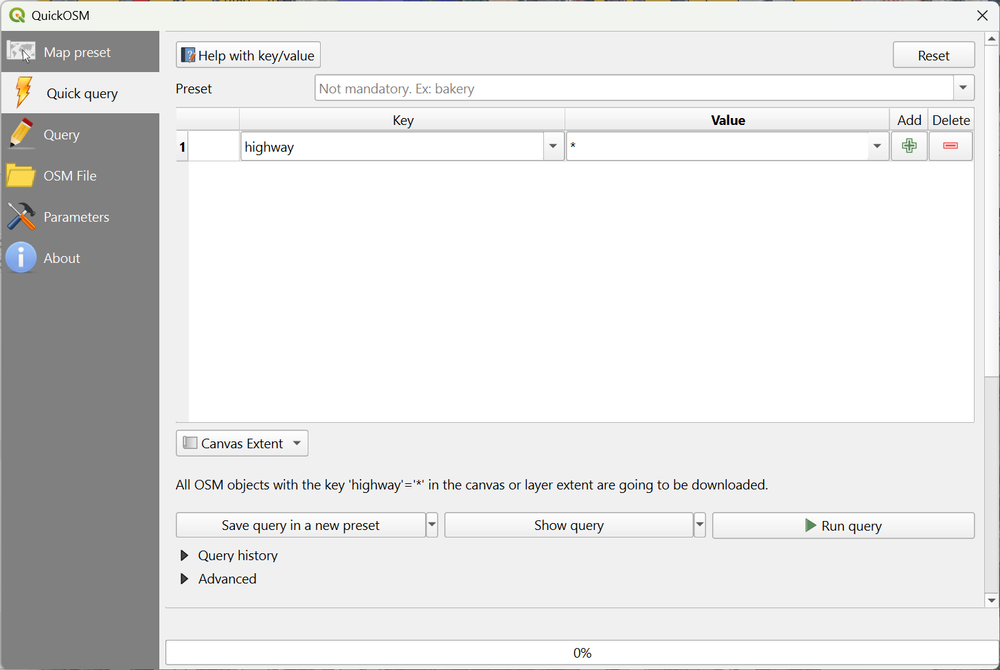
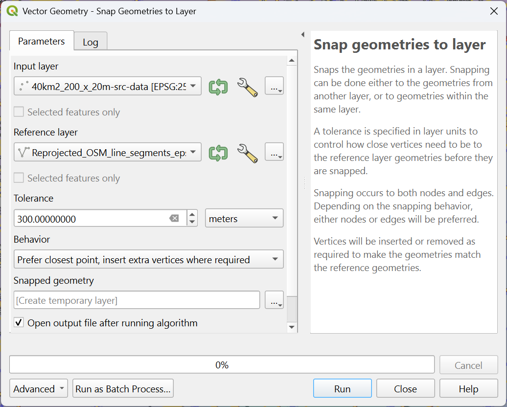
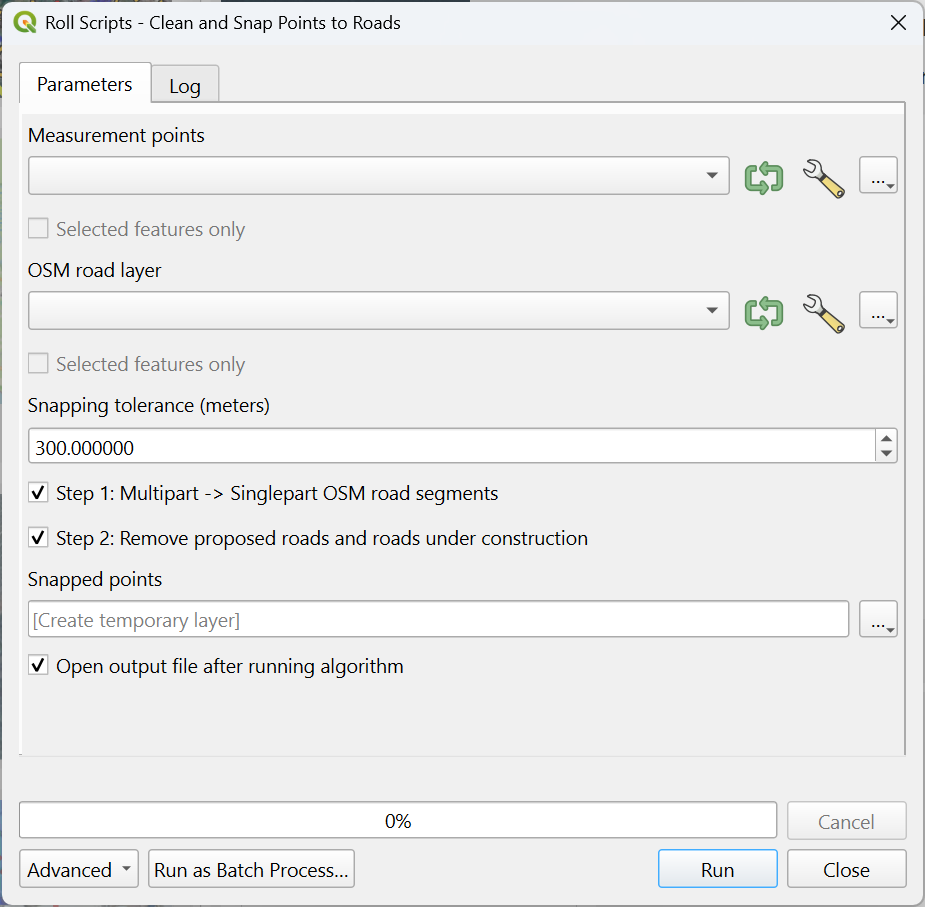
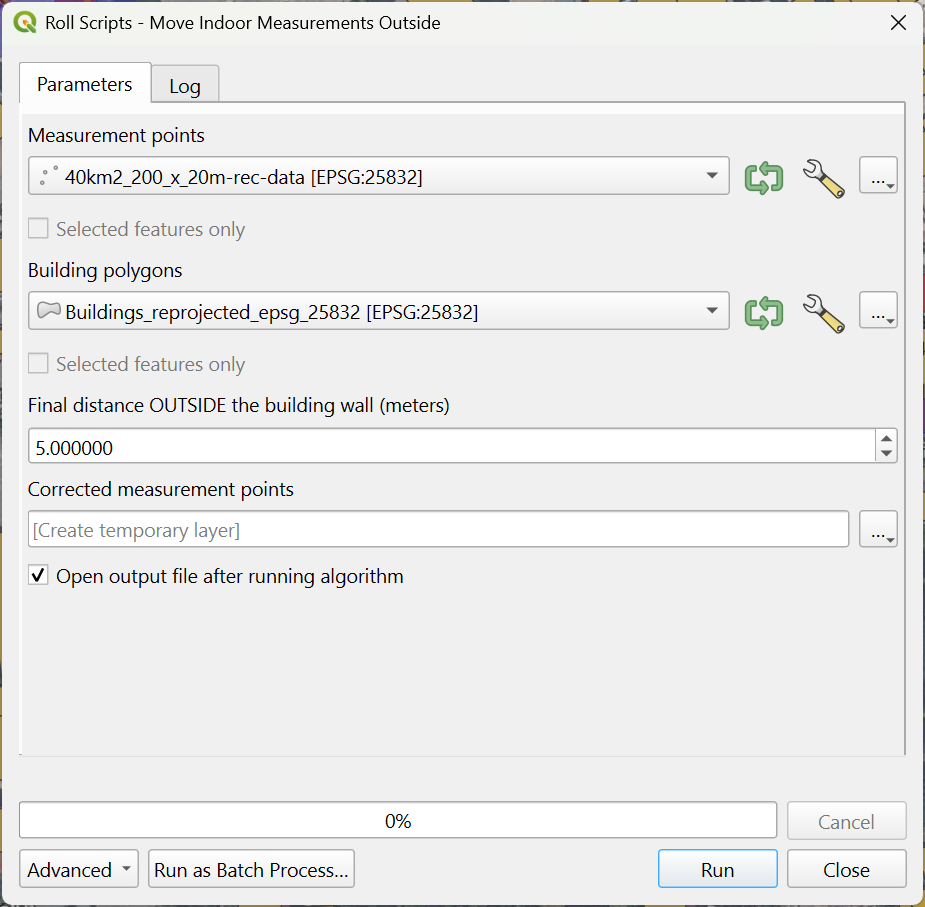

Roll and QGIS Interface Guide¶
This guide describes the round-trip workflow between Roll and QGIS: exporting geometry or SPS data to QGIS, editing or filtering it there, and then importing the updated result back into Roll for renewed analysis.
1. Add a Point Layer¶
Adding a point layer may be needed to show a requested survey outline from a client or a prospect outline from the geologist. A convenient way of doing this, is to import a layer from a delimeted text file. Such a text file may look as follows:
X |
Y |
|---|---|
647285 |
5556357 |
652514 |
5560823 |
669808 |
5552982 |
666808 |
5547061 |
647285 |
5556357 |
The approach is as follows:
In QGIS, choose
Layer -> Add layer -> Add delimited text layer.Select the file name.
Optionally, give the layer a name that is different from the file name.
Check the file format.
Check the record and field options, including header lines when needed.
Define the columns that represent X, Y, and optionally Z values.
Select
Add.Use Full Zoom (
Ctrl+Shift+F) in QGIS, to show all data, including the newly added points.Alternatively, select the new layer, and use
Zoom to Layer, to zoom to the newly added points.
{kind=link}
{kind=link}
2. Create a Line Layer from Points¶
Once a point layer has been created, the points can be hard to spot after you zoom out. Turning them into connected lines improves visibility and also prepares them for polygon creation.
In QGIS, open
Processing -> Toolbox.In the Processing Toolbox, choose
Vector creation -> Points to path.Select the input layer.
Enable closed path creation if needed.
Select
Runto create a multi-line layer in the order the points were listed.
3. Create a Filled Polygon Layer from Lines¶
Lines are easier to see than individual points, but line layers cannot be filled and cannot be used as clip boundaries. For that, you need polygons.
In QGIS, open
Processing -> Toolbox.In the Processing Toolbox, choose
Vector geometry -> Lines to polygons.Select the input layer.
Select
Runto create a filled polygon.Double-click the polygon to open Layer Properties.
Under
Symbology, choose a meaningful color.Reduce opacity below 100 percent so underlying layers remain visible.
To add an outline:
In the Layers panel, open the layer context menu and choose
Make permanent.After the polygon outline has been added, you can delete the temporary line layer because it is no longer needed for the later src/rec and sps/rps editing steps.
{kind=link}
4. Export src/rec and sps/rps Data from Roll to QGIS¶
In Roll, choose
File -> Export to QGIS -> Export Geometry -> Export xxx Records to QGIS.Alternatively, use the export buttons for SPS and RPS records from the
SPS importtab .Alternatively, use the export buttons for SRC and REC records from the
Geometrytab .Roll creates in-memory scratch layers in QGIS with the exported data.
5. Make Scratch src/rec and sps/rps Layers Permanent¶
To make the exported source and receiver data permanent and available the next time the QGIS project is opened:
In the Layers panel, open the scratch layer context menu and choose
Rename layer.Use
Ctrl+Cto copy the layer name, then press Escape without renaming.In the layer context menu, choose
Make Permanent.Alternatively, use the scratch button on the right side of the layer name.
Select
ESRI Shapefileas the file format.Select the ellipsis button next to the file name and navigate to the desired file location.
Paste the copied layer name into the dialog’s
File namefield.Select
OK. The layer is now permanent and will be restored when the project is opened again.
6. Truncate src/rec and sps/rps Point Areas in QGIS¶
Survey geometry in Roll is created from rectangular blocks, while the real survey outline is usually constrained by concession boundaries, cities, lakes, or similar features. In QGIS you can either clip the points away or mark them inactive by testing whether they fall inside a polygon.
6.1. Clipping: the Easy Way Out¶
Clipping removes all points outside a selected polygonal area. It is quick, but the removed points are not easy to reinstate later.
Choose
Vector -> Geoprocessing Tools -> Clip.Select the point layer containing SRC/REC or SPS/RPS points as the input layer.
Select the boundary polygon as the overlay layer.
Select
Run.The clipped point layer is created as a scratch layer.
6.2. Clipping: Future-Proofing Your Edits¶
This approach first selects points inside a polygon and then writes the
selection state into a permanent attribute, usually inuse.
Choose
Vector -> Research Tools -> Select by Location.Select the appropriate SPS/RPS or SRC/REC point layer under
Select features from.For the spatial test, choose
are withinand optionallytouchrelative to the boundary polygon.Select the polygon layer.
Create a new selection.
Select
Runto create a selection of points inside the polygon.Confirm that the selected points are highlighted in yellow and marked with a red cross.
From the Attributes toolbar, open
Field Calculator.Alternatively, open the Attribute Table
 (
(F6) and then open the Field Calculator (Ctrl+I).Uncheck
Only update xxx selected feature(s). The calculation must update all features, not only the selected ones.Now either:
Create a new 32-bit integer field using the default field length.
Update an existing integer field, such as Roll’s
inusefield.
In the expression widget, enter
is_selected().This function returns true (1) when a point record is selected and false (0) otherwise.
Select
OKand let the calculation run on all point records in the active layer.After completion, verify the result in the Attribute Table.
The modified point layer is now ready to be read back into Roll.
{kind=link}
7. Move src/rec and sps/rps Points in QGIS manually¶
To change any of the exported layers you must enable editing first.
In the Layers panel, open the point layer context menu and choose
Toggle editing.A pencil icon appears next to the layer name.
The pencil on the digitizing toolbar is also highlighted.
In the digitizing toolbar, select

theVertex tool (Current layer).To select a single point, do the following:
Right-click to lock on a feature. A red circle will appear.
Left-click in the red circle. A red cross (attached to the cursor) appears in the circle
Move the cursor with the red cross to the desired location and Left-click
At this moment the point is moved to the new position
It is also possible to select multiple points (line segments) at once.
The easiest way is to use the left mouse button to draw a bounding box around a set of points.
Use
Alt+clickto select vertices by polygon: Release theAltkey after the first click. Each click adds another point to the polygon. To close the polygon, right click once, and the points in the polygon will be selected.Use
Shift+clickto add vertices to the selection.Use
Ctrl+clickto remove vertices from the selection.Use
Shift+Rto enable range selection.
{kind=link}
{kind=link}
8. Move src/rec and sps/rps Points in QGIS using tools¶
Manual relocation of points gives precise control over the final locations, but it is also very tedious for a survey with 10,000 or more source and receiver points.
The relocation approach is rather straightforward for most sources and receivers.
Source points (VPs) are often shifted to the nearest road segment for easy vibroseis access
Receiver points are much more flexible, as long as measurements are done outside of buildings
8.1 Move src/sps points¶
Moving source points to a road segment can be done using a tool from the processing toolbox
Processing Toolbox -> Vector geometry -> Snap Geometries to Layer. But before we can do this,
the roads in and around the survey area need to be downloaded from OpenStreetMaps.org
and these roads need to be reprojected from EPSG:4326 to the project’s CRS.
There are multiple web-based and Python based tools that extract the OSM OpenStreetMaps road data. One needs to be carefull that downloaded line segments do not include waterways, railways and administrative boundaries.
QuickOSM is a QGis plugin that makes it easy to select OSM data using a Quick query.

QuickOSM quick query configuration used to download road data.¶
Once the road information has been downloaded, in QGis use Processing Toolbox -> Vector general -> reproject to reproject the road segments to the project’s CRS.
With this out of the way, we can now move the source points to the nearest road segment using Processing Toolbox -> Vector geometry -> Snap geometries to layer.

Snap Geometries to Layer settings is used to move source points to nearby roads.¶
The behavior should be Prefer closest point. The Tolerance should be several 100 meter, if the road grid is sparse. If the tolerance is set too low, the point won’t be moved at all.
Note
OSM roads often contain multipart line segments. These first need to be converted to singlepart lines.
This can be done using Processing Toolbox -> Vector geometry -> Multipart to Singleparts.
In Roll, under Processing -> Processing Utilities -> Move Points to nearest line in QGis you’ll find a script that takes care of the various preparation steps:
It (optionally) converts multipart road (line) segments to singlepart lines
It (optionally) removes planned roads and roads that are under construction
Finally it snaps the points to the nearest road segment.
See the figure below for the user interface.

Clean and snap points to roads in QGis.¶
8.2 Move rec/rps points¶
Receiver points don’t really need to be aligned with the road grid. They can be located anywhere within the survey area, as long as they are outside of buildings. There is currently no simple tool in the Processing Toolbox that takes care of that. QuickOSM can be used to find all buildings, by using a different query.
Use key = building and value = *. This will give you a new temporary layer in EPSG:4326 that needs to be converted to the project CRS for it to become useful.
Once this is done, from Roll, you can run Processing -> Processing Utilities -> Move points outside polygons.

Move points outside polygons workflow used to shift indoor measurements to valid locations.¶
The tool isn’t yet 100% waterproof; there is chance that you move a point into a neighboring building. This is because the tool doesn’t check if the final point lies within a polygon or not. You will need to manually verify that all points are outside of buildings before proceeding with binning. This behavior will be improved in future versions of Roll.
8.3 Overall results¶
With both sources and receivers relocated, you can get results as shown in the figure below.

Relocated source and receiver points after road snapping and building-avoidance updates.¶
The result sofar isn’t yet 100% perfect; there is a chance that you get some points inside buildings. And maybe some roads have become inaccessible over time. But it is a good start to confirm actual survey coverage instead of the nominal coverage based on the template alone.
9. Read src/rec and sps/rps Points from QGIS back into Roll¶
Once changes have been made to overall source and receiver areas or to individual point locations in QGIS, including deleted points, you can read the modified point data back into Roll and rerun the analysis.
In Roll, use the
GeometrytabRead from QGISbuttons for SRC and REC data.In Roll, use the
SPS importtabRead from QGISbuttons for SPS and RPS data.In the layer dialog that opens:
Select the correct QGIS point layer containing the SPS/RPS or SRC/REC data.
Confirm that the selected point layer CRS matches the Roll project CRS.
Decide whether to use a selection field code. This is normally the
inusefield.To inspect the available fields in QGIS:
Select the layer in the Layers panel.
Open its context menu and choose
Open Attribute Table(Shift+F6).Check the column headers. Roll expects the fields
line,stake,index,code,depth,elev, andinuse.inuse = 0deselects a point for analysis in Roll.Integer fields other than
inusecan also be used to select active or passive points in Roll.
10. Process Data Edited in QGIS back in Roll and show results in QGIS¶
After the edited Geometry or SPS data has been copied back into Roll:
In Roll’s processing menu, run
Binning from GeometryorBinning from Imported SPS, depending on the tables that have been used in QGis.Choose carefully between the two binning modes:
Full binning creates the RMS offset map, offset plots, offset/azimuth diagrams, and trace table content needed for the spider plot in the Layout pane. It uses a large memory-mapped
*.roll.ana.npyarray, so performance can degrade significantly on large areas.Basic binning creates the fold map and minimum and maximum offsets on the fly while processing the source and receiver points. It is faster, but it does not create the richer offset products provided by full binning.
Once binning is complete, export the fold map and the minimum and maximum offsets to QGIS using either the buttons in the
Display paneor the export options in theFile menu.Select the appropriate folder and then choose a file name. Roll suggests a name automatically.
The georeferenced TIFF file is then imported into the QGIS project.
Areas with no data in the fold map or minimum and maximum offset plots are fully transparent in QGIS.
From within QGIS, verify that the edits or deleted points still produce acceptable coverage plots.